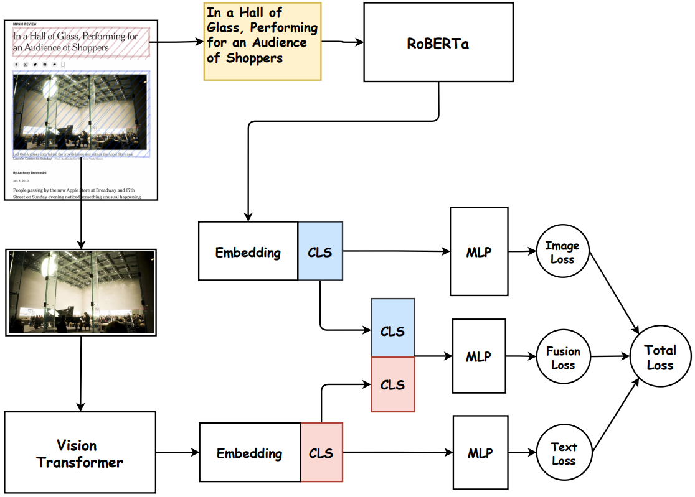

Model Architectures


Multimodal Pipeline Tutorials
Preprocessing
Technical aspects of preparing image-text pairs and batch composition for training.
Paired Dataset and Dataloader
class N24NewsFewShotDataset(Dataset):
def __init__(
self,
items: List[Dict[str, object]],
tokenizer: RobertaTokenizerFast,
image_processor: ViTImageProcessor,
label2idx: Dict[str, int],
image_size: int,
max_text_length: int,
):
self.items = items
self.tokenizer = tokenizer
self.label2idx = label2idx
self.max_text_length = max_text_length
mean = image_processor.image_mean
std = image_processor.image_std
self.transform = transforms.Compose(
[
transforms.Resize((image_size, image_size)),
transforms.ToTensor(),
transforms.Normalize(mean=mean, std=std),
]
)
def __len__(self) -> int:
return len(self.items)
def __getitem__(self, index: int) -> Dict[str, torch.Tensor]:
item = self.items[index]
try:
image = Image.open(item["image"]).convert("RGB")
except Exception:
image = Image.new("RGB", (224, 224), (128, 128, 128))
pixel_values = self.transform(image)
encoded = self.tokenizer(
str(item["text"]),
truncation=True,
padding="max_length",
max_length=self.max_text_length,
return_tensors="pt",
)
return {
"sample_id": str(item["id"]),
"pixel_values": pixel_values,
"input_ids": encoded["input_ids"].squeeze(0),
"attention_mask": encoded["attention_mask"].squeeze(0),
"label": torch.tensor(self.label2idx[str(item["label"])], dtype=torch.long),
"label_name": str(item["label"]),
}Paired dataset and loader implementation for multimodal training.
Model Architecture Pipeline
Unified architecture flow covering dual encoders, fusion logic, classifier head, and output stage.
CLIP Classifier Pipeline
class MLPHead(nn.Module):
def __init__(self, in_dim: int, hidden_dim: int, out_dim: int, dropout: float):
super().__init__()
self.net = nn.Sequential(
nn.Linear(in_dim, hidden_dim),
nn.GELU(),
nn.Dropout(dropout),
nn.Linear(hidden_dim, out_dim),
)
def forward(self, x: torch.Tensor) -> torch.Tensor:
return self.net(x)
class MultimodalFewShotModel(nn.Module):
def __init__(self, cfg: AppConfig, num_classes: int):
super().__init__()
self.cfg = cfg
# Backbone
self.vit = ViTModel.from_pretrained(cfg.model.vision_model)
self.roberta = RobertaModel.from_pretrained(cfg.model.text_model)
if cfg.model.freeze_image:
for param in self.vit.parameters():
param.requires_grad = False
if cfg.model.freeze_text:
for param in self.roberta.parameters():
param.requires_grad = False
img_dim = int(self.vit.config.hidden_size)
txt_dim = int(self.roberta.config.hidden_size)
# Heads
self.image_head = MLPHead(img_dim, cfg.model.mlp_hidden_dim, num_classes, cfg.model.dropout)
self.text_head = MLPHead(txt_dim, cfg.model.mlp_hidden_dim, num_classes, cfg.model.dropout)
self.fusion_head = MLPHead(
img_dim + txt_dim,
cfg.model.fusion_hidden_dim,
num_classes,
cfg.model.dropout,
)
def _encode_image(self, pixel_values: torch.Tensor) -> torch.Tensor:
out = self.vit(pixel_values=pixel_values, return_dict=True)
return out.last_hidden_state[:, 0, :]
def _encode_text(self, input_ids: torch.Tensor, attention_mask: torch.Tensor) -> torch.Tensor:
out = self.roberta(input_ids=input_ids, attention_mask=attention_mask, return_dict=True)
return out.last_hidden_state[:, 0, :]
def forward(self, pixel_values: torch.Tensor, input_ids: torch.Tensor, attention_mask: torch.Tensor) -> Dict[str, torch.Tensor]:
# Input + preprocess happen in dataset/dataloader, then backbone here.
image_cls = self._encode_image(pixel_values)
text_cls = self._encode_text(input_ids, attention_mask)
# Feature fusion by concatenation.
fused_cls = torch.cat([image_cls, text_cls], dim=1)
# Output heads.
image_logits = self.image_head(image_cls)
text_logits = self.text_head(text_cls)
fusion_logits = self.fusion_head(fused_cls)
return {
"image_logits": image_logits,
"text_logits": text_logits,
"fusion_logits": fusion_logits,
}